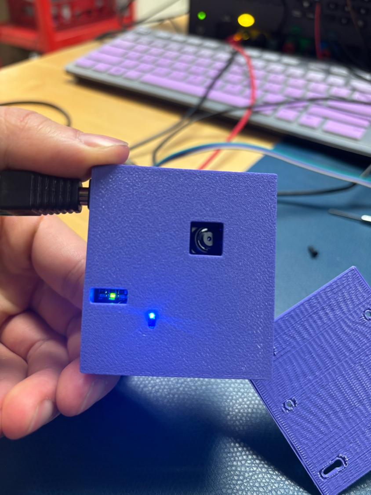
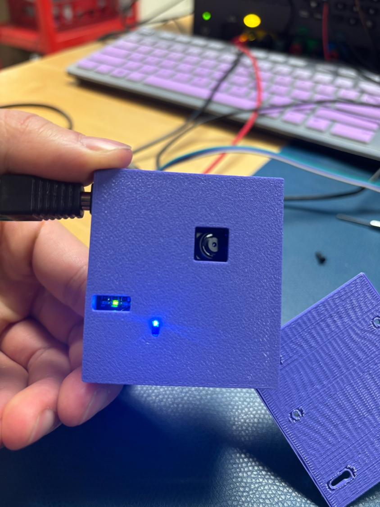

EE 326 – Web Camera Project
Skills: Embedded Systems, PCB Design (Eagle CAD), ESP32 & MCU Firmware (Microchip Studio), SMD Soldering, Hardware–Software Integration, Mechanical Design (Onshape), 3D Printing
Project Overview
For EE 326: Electronic System Design, we set out to design and build a working web camera system from the ground up. The webcam streams images to a locally hosted website via ESP32 Wi-Fi. The main goal was to learn and apply the principles of electronic system design in an end-to-end product, integrating all subsystems from hardware to firmware and networking.
- MCU: SAM4S8B (Microchip) – bridges the camera and Wi-Fi module
- Camera: OV2640 – streams live images
- Wi-Fi Module: ESP32 – hosts the web interface and streams captured images
Design & Prototyping
We began by prototyping the system with breakout boards for each component. This allowed us to verify communications (UART/SPI) between the MCU, camera, and ESP32 module before committing to a custom printed circuit board (PCB) design. Careful documentation of all wire connections ensured that we could accurately capture the working prototype in schematic form.


PCB Design
After validating our design, we created a custom PCB in Autodesk Eagle. This significantly reduced wiring complexity and improved robustness, transforming our rat's nest of wires into a neat, compact module. Key communication lines (UART, SPI, four GPIOs) were routed and labeled for clear silkscreen assembly. Special attention was paid to include capacitor and resistor values directly on the silkscreen for easy assembly.
Assembly & Integration
Upon arrival of the manufactured PCB, we soldered on all components and ran extensive continuity and connection tests. Integration and debugging required step-by-step validation of each module's communication with the others, especially at the software/hardware boundary.
- Verified power rails and connectivity with a DMM
- Flashed test firmware to validate MCU-to-camera and MCU-to-ESP32 channels


3D Design & Mechanical Integration
To ensure proper fit within the webcam housing, we created a 3D model of the completed PCB assembly. This enabled virtual verification of mounting hole patterns and mechanical clearances before physical assembly.
 

Challenges
- PCB: Due to an unconnected power pin on the camera, we spent hours debugging only to have the camera jump to life when this pin was connected
- Frame rate: The camera FPS is extremely slow, future work includes ironing out the firmware to increase FPS
Lessons Learned
- Beginning with breakout boards helped de-risk the main design and catch communication errors early.
- Double check which pins need to be connected for components, i.e. extra power and ground pins even if the peripheral is already connected elsewhere